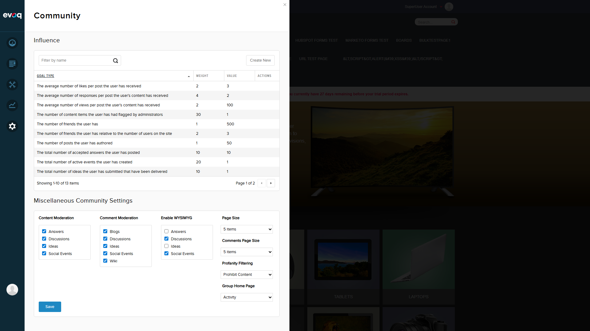
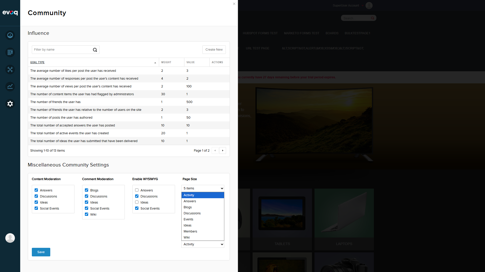
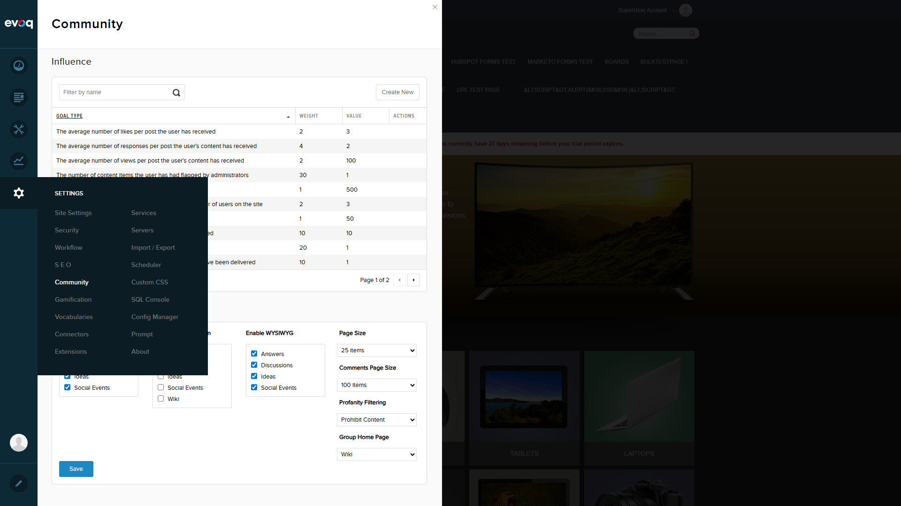
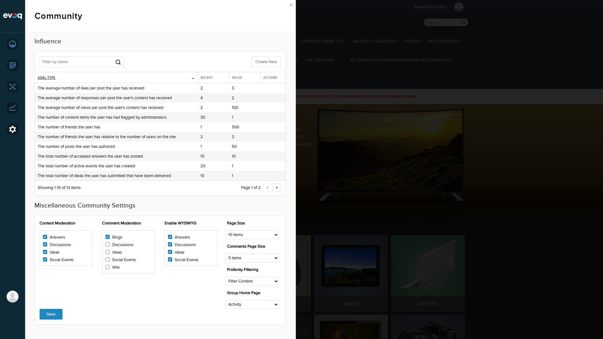

The Group Home Page Selection feature allows administrators to select the default landing page for group spaces from dynamically loaded group tabs. This setting determines which page users see when they first visit a group.
Key Code:
- Line 319: groupHomePage: ko.observable(0) - Default value
- Line 318: groupPages: ko.observableArray([]) - Available pages
- Lines 331-400: getSettings() - Fetches settings from API
- Lines 422-454: saveSettings() - Saves GroupHomePage to backend
Test Scenario 1: Verify Dropdown Populates with Available Group Tabs PASS
Navigate to Admin > Settings > Community Settings
Locate the Group Home Page dropdown under Miscellaneous Community Settings
Click on the dropdown to expand options
Verify all group tabs are listed

Step 1: Community Settings panel with Group Home Page dropdown visible

Step 2: Dropdown expanded showing all 8 available group tabs
Result: The dropdown correctly populates with 8 group tabs:
Activity
Answers
Blogs
Discussions
Events
Ideas
Members
Wiki
Test Scenario 2: Select a Group Home Page from Dropdown PASS
Click on the Group Home Page dropdown
Select "Discussions" from the list
Verify the selection is displayed in the dropdown
Discussions successfully selected from the dropdown
Result: Selection functionality works correctly. User can select any option from the dropdown.
Test Scenario 3: Save Group Home Page Selection PASS
After selecting a value, click the Save button
Observe the success message
Settings saved - "Discussions" selected and saved successfully
Second save test - "Wiki" selected and saved with success notification
Result: Save functionality works. The system displays "Item successfully saved." confirmation message.
Test Scenario 4: Verify Persistence After Navigation FAIL
Select "Wiki" as the Group Home Page
Click Save and confirm success message appears
Navigate away from Community Settings (to Dashboard)
Navigate back to Community Settings
Check if "Wiki" is still selected

Step 1-2: "Wiki" selected and ready to save

Step 5: After navigating back - Dropdown shows "Activity" instead of "Wiki"
BUG FOUND: Settings Do Not Persist
Severity: High
Description: The Group Home Page selection does not persist after navigating away from the Community Settings page. Despite receiving a "Item successfully saved." confirmation, the setting reverts to "Activity" (appears to be the default) when the user navigates away and returns.
Steps to Reproduce:
Go to Settings > Community
Change Group Home Page from "Activity" to any other value (e.g., "Wiki")
Click Save - observe success message
Navigate to Dashboard or any other section
Return to Settings > Community
Observe: Group Home Page shows "Activity" instead of the saved value
Expected Result: The saved value should persist and be displayed when returning to the settings page.
Actual Result: The value reverts to what appears to be a default value ("Activity") regardless of what was saved.
Possible Causes:
The SaveSettings API may not be correctly persisting the GroupHomePage value to the database
The GetSettings API may not be correctly retrieving the GroupHomePage value
There may be a mismatch between the key/value format expected by the save and retrieve operations
Test Scenario 5: Verify Default Value PASS
Observe the initial value in the Group Home Page dropdown when loading Community Settings
Result: The default value displayed is "Activity" which corresponds to the first option in the dropdown. Per the code (line 375: groupHomePage = data.Setting.GroupHomePage || 0), the default value is 0 when no selection has been made. The UI maps this to the first available group tab.
Summary of Findings
Test Case
Status
Dropdown populates with available group tabs
PASS
Select a group home page from dropdown
PASS
Save group home page selection (immediate)
PASS
Verify persistence after navigation
FAIL
Verify default value behavior
PASS
Recommendations
Investigate SaveSettings API: Debug the CommunitySettingsController.SaveSettings method to verify the GroupHomePage value is being correctly persisted to the CmxSettings in the database.
Check Database Storage: Verify the database table/settings store to confirm whether the GroupHomePage value is actually being saved.
Review GetSettings API: Ensure the GetSettings API is correctly retrieving and returning the GroupHomePage value from storage.
Test with Browser Network Tab: Monitor the actual API requests/responses to see what data is being sent on save and received on load.